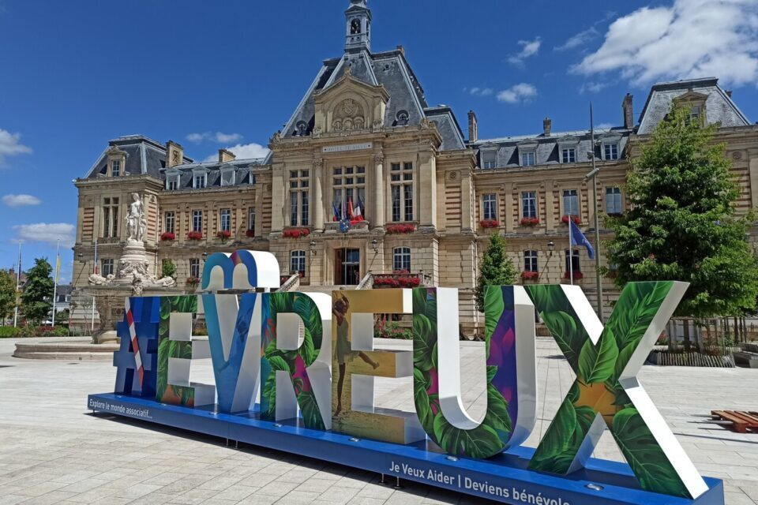
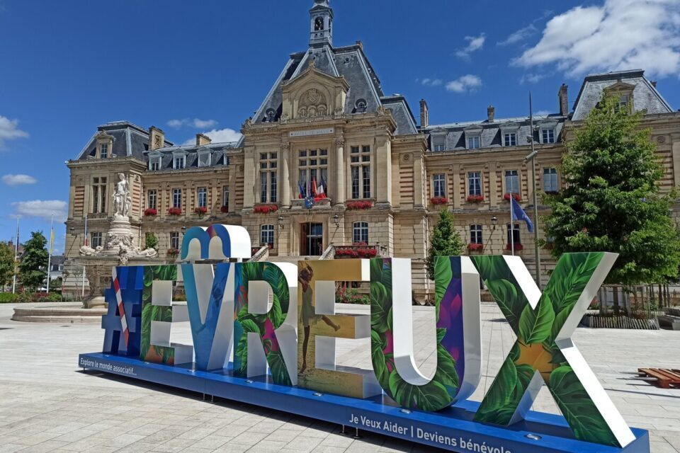
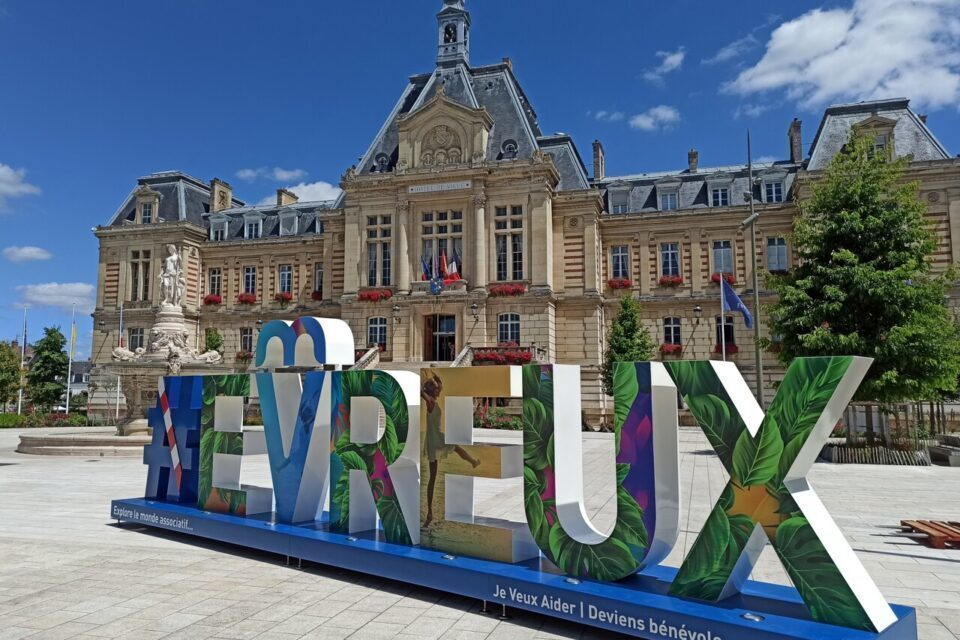
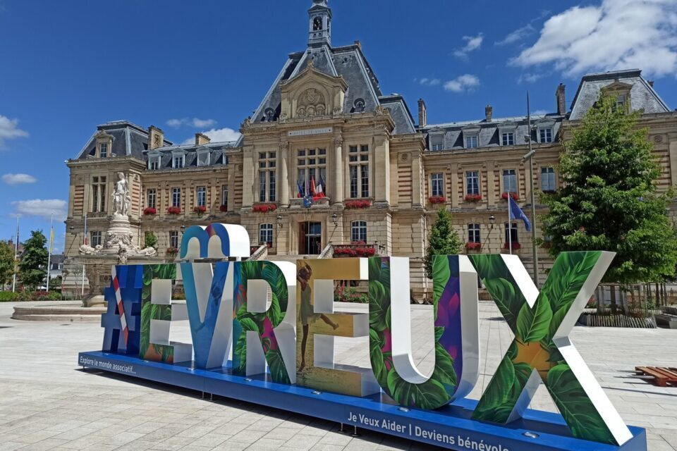

Bonjour et bienvenue sur Evreux-Discover !
Nous sommes très heureux de vous présenter notre projet, codé afin
de participer aux olympiades de NSI.
Ce projet a été réalisé dans le cadre du cours de NSI (Numérique et Sciences Informatiques) en classe de première.
Cliquez ici pour accéder à notre carte d'Évreux
Notre projet
Notre projet consiste à recréer une carte en ligne (à la manière de Google Maps ou Apple Plans !) afin que vous puissiez retrouver des lieux
qui ne sont pas habituellement indiqués sur ces genres de plateformes.
A savoir que sur notre carte, vous pourrez retrouver les informations suivantes :
vous y trouverez :
Fonctionalitées
Fonctionnalités
- Affichage de la carte d'Evreux avec différents fonds de cartes.
- Regroupement des marqueurs par catégorie grâce au plugin Leaflet.markercluster.
- Ajout de marqueurs sur la carte avec des popups et des liens personnalisés.
- Contrôle des couches pour afficher/masquer certains types de marqueurs.
- Affichage d'une barre latérale permettant de naviguer entre les différentes fonctionnalités de la carte.
- Possibilité d'ajouter un marqueur personnalisé sur la carte.
- Affichage des marqueurs regroupés par catégorie dans la barre latérale.
- Recherche rapide des lieux en fonction de leur catégorie.
- Affichage des informations détaillées d'un lieu lorsqu'on clique sur son marqueur.
- Affichage d'un rayon de recherche autour d'un lieu pour connaître sa portée.
- Génération de polygones isochrones pour évaluer le temps de trajet depuis un lieu donné.
- Possibilité de dessiner des formes sur la carte.
- Possibilité de localiser sa position sur la carte.
- Possibilité de basculer en mode plein écran.
eiuriozirjtuhreioziruehoiezju